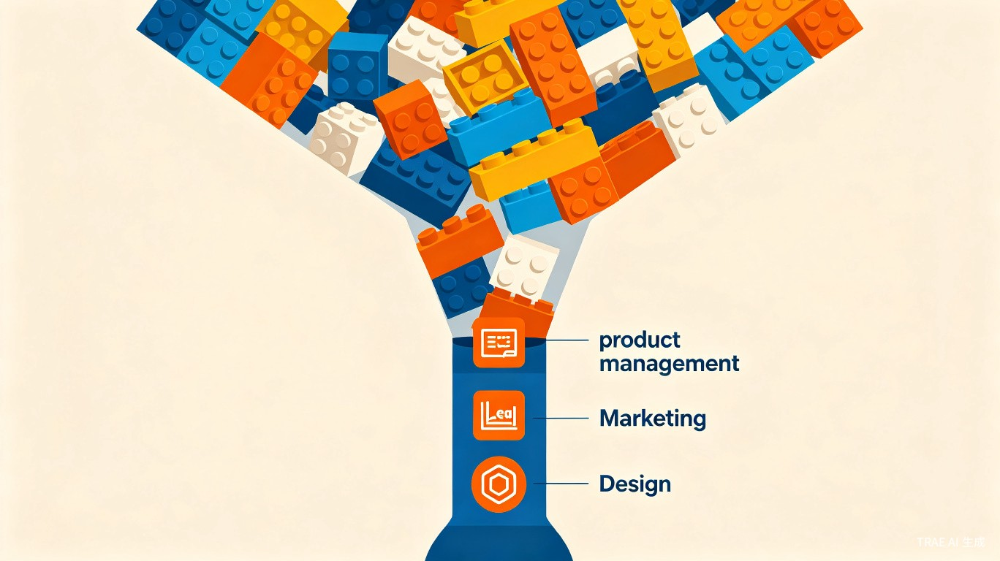
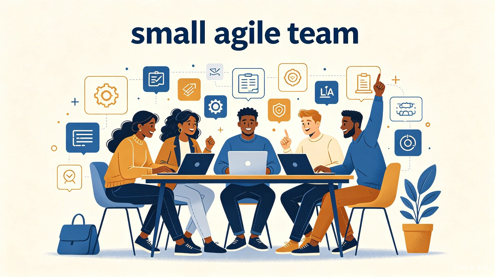
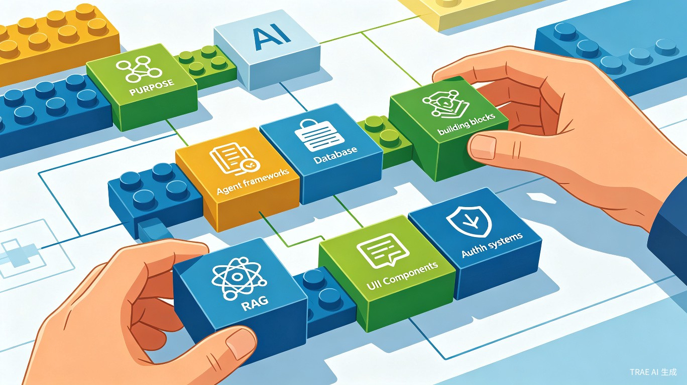
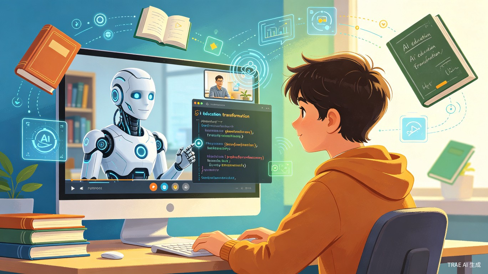

近期，在 LangChain 举办的智能体大会 Interrupt 上，吴恩达与 LangChain 创始人 Harrison Chase 进行了一场关于 AI Agent 的对谈。整场交流的核心并不是简单讨论 Agent 有多强，而是围绕一个更现实的问题展开：当 AI Agent 让软件开发变快之后，真正的瓶颈会转移到哪里？
1编程智能体的崛起：速度超乎想象
吴恩达首先提到，过去一年 AI 领域的热度和炒作超出了他的预期。相比之下，更值得关注的是编程智能体的快速进步。
他说，六个月前自己几乎主要使用 Claude Code，现在则开始混合使用 OpenAI Codex、Gemini CLI、OpenCode 等工具。编程智能体的能力边界变化很快，甚至连在手机上写代码这样的工作流，也开始变得自然。
工具迭代极快
从 Claude Code 到 OpenAI Codex、Gemini CLI，编程智能体工具在半年内发生了剧烈变化。
工作流重塑
手机写代码、Mac Mini 远程开发等新工作流正在快速普及。
2产品管理瓶颈：当代码不再是瓶颈
但编程智能体带来的最大变化，不只是写代码更快，而是软件生产链条被重新分配。吴恩达提出了"产品管理瓶颈"的概念：当代码实现速度提升 10 倍甚至 100 倍之后，限制团队效率的就不再只是工程实现，而是"到底该做什么"。

需求定义、用户反馈、优先级判断、产品边界，都会变得更重要。与此同时，营销、法务、设计、合规也可能变成新瓶颈。过去一个产品开发三个月，等法务一周签字可以接受；但如果现在一天就能做出产品，再等一周，法务本身就成了阻碍。
3未来团队：小、快、通才化
因此，未来的软件团队会更小、更快，也更依赖通才型人才。
吴恩达提到，他越来越多地组建一到十人的小团队，成员往往是高上下文、高授权、技术能力强的工程师。他们不只写代码，还会借助 AI 完成产品定义、营销文案、服务条款初稿等工作。

AI 不会让工程师瞬间变成优秀营销人员或律师，但可以让他们先产出一个可用初稿，再交给专业人员把关。这种"鸽巢原理"式的团队配置——五个人承担五种职能但只有两个人——迫使每个人都必须跨角色工作。
团队规模
1-10 人的小团队成为主流，成员是高上下文的通才型工程师。
角色融合
工程师借助 AI 承担产品、营销、法务等角色，快速产出初稿后由专业把关。
4乐高积木式开发：组合即创新
在 Agent 开发方式上，吴恩达用了"乐高积木"的比喻。
今天的开发者面对的不只是模型，还有 RAG、Agent 框架、评估工具、Guardrails、UI 组件、身份认证、数据库等大量构建模块。开发者越了解这些模块，越能快速组合出可用系统。

但问题是，API、SDK 和工具变化太快，模型未必知道最新用法。因此，Agent 的能力不只取决于模型本身，也取决于它能否获得及时、准确、可执行的上下文。吴恩达提到了 Context Hub 项目——一个面向 AI 智能体的"Stack Overflow"，让智能体能获取最新文档。
5企业落地：从降本到重构增长
谈到企业落地，吴恩达认为，很多企业正在做自下而上的 AI 创新，但这种"百花齐放"往往只能带来点状提效，难以形成真正转型。
他以银行贷款审批为例：如果只是把一小时人工审核变成 AI 审核，价值有限；更大的机会是重构整个流程，推出"10 分钟获批"的贷款产品。这需要营销、数据、审批、尽调、执行等环节一起变化。
| 策略 | 效果 | 局限 |
|---|---|---|
| 自下而上创新 | 点状效率提升 | 难以形成系统性转型 |
| 自上而下重构 | 业务流程再造 | 需要高层推动和跨部门协作 |
| 混合模式 | 既有创新又有转型 | 需要清晰的战略和资源分配 |
他也提醒企业，不要只把 AI 当作降本工具。成本节省有上限，增长才更有想象空间。客服、呼叫中心、drive-through 点餐等场景中，AI 的价值不只是减少人工，而是更快服务更多客户，改善体验，进而带动业务增长。
6数据架构：Agent 时代的基础设施
最后，吴恩达把企业 Agent 的关键基础落到数据架构上。
过去企业主要围绕结构化数据做治理，但 Agent 真正要发挥作用，必须能处理文本、PDF、图片、音频、视频等非结构化数据。现实是，很多企业数据分散、权限体系为人而非 Agent 设计、治理和可观测性不足。
吴恩达判断，未来几年，企业会启动大规模数据架构重构，让数据真正变得 AI-ready、agent-ready。这可能涉及数千万甚至数亿美元的投资。
数据碎片化
数据分散在各处，有些甚至还在个人笔记本电脑上，缺乏统一治理。
权限体系过时
现有权限系统为人类设计，Agent 的权限继承和管理仍是空白地带。
非结构化数据
过去 20 年堆积的 PDF、文档、音视频，现在可以通过 AI 重新挖掘价值。
可观测性不足
缺乏对 Agent 行为和数据使用的有效监控和审计机制。
7额外洞察：教育与供应商锁定
AI 正在改变教育
吴恩达介绍了 CodeDream.ai 的愿景："不要只是上在线课程，而是来进行一场对话"。学生可以与 AI 进行模拟视频通话，随时打断提问。视频区域不再是静态播放，而是可交互的 JavaScript 环境，学生可以直接在视频里输入 prompt 或查询。

警惕供应商锁定
吴恩达特别强调要警惕供应商锁定。AI 模型和 Agent 工具变化太快，没人能确定一年后最强的模型是谁。因此，企业应尽量保留选择权，不要轻易因为折扣签下过长合约。他个人几乎从不签超过一年的合同。
核心结论
- AI Agent 不只是让代码写得更快，它正在倒逼企业重新思考产品、组织、数据、流程和技术选型
- 当开发速度提升 100 倍后，产品管理、法务、营销、设计等环节成为新瓶颈
- 未来团队将更小、更快、更通才化，工程师借助 AI 跨角色工作
- 开发方式趋向"乐高积木"式组合，模块理解和上下文获取能力至关重要
- 企业不应只把 AI 当降本工具，而应追求重构流程、推动增长
- 数据架构重构是 Agent 落地的关键基础设施，非结构化数据处理能力亟待建设
- 在快速变化的技术环境中，保留供应商选择权比短期折扣更有价值